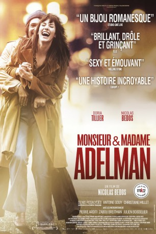

#11034 Die Poesie der Liebe
Alternativ: Adelman
 
 IMDB-Wertung: 7.3 / 10
IMDB-Wertung: 7.3 / 10  Metascore: 0
Metascore: 0 
Paris, Anfang der 70er Jahre: Sarah (Doria Tillier) und Victor (Nicolas Bedos) lernen sich in einem Nachtclub kennen. Obwohl sie sich von Anfang an zueinander hingezogen fühlen, gehen sie doch mit unterschiedlichen Vorstellungen an ihre Beziehung: Victor will sich noch nicht so wirklich binden und vermeidet ein klares Bekenntnis, während er für Sarah die große Liebe ist. So geht die Beziehung zunächst in die Brüche und es sieht so aus, als wären die beiden doch nicht füreinander bestimmt. Doch schlussendlich kann sich auch Victor nicht Sarahs Charme entziehen und die beiden heiraten und gründen eine Familie. Victor feiert bald große Erfolge als Schriftsteller, während Sarah ihm scheinbar nur unterstützend zur Seite steht. Doch irgendwann kommt ans Licht, was es mit Victors Erfolg in Wahrheit auf sich hat…
Jahr: 2017
Dauer: 120 Minuten
FSK: 12
Land: Frankreich Studio: TemperclayfilmTonspuren:
Untertitel:
Auflösung: 1080p (1920x800) Größe: 4249 MB
Genre: Komödie, Liebe
Regisseur: Nicolas Bedos
Drehbuch: Nicolas Bedos, Doria Tillier
Soundtrack: Nicolas Bedos, Philippe Kelly
Darsteller:
 Denis Podalydès als Le psy
Denis Podalydès als Le psy- Pierre Arditi als Claude de Richemont
 Zabou Breitman als La directrice de l'école d'Arthur
Zabou Breitman als La directrice de l'école d'Arthur Julien Boisselier als Antoine de Richemont
Julien Boisselier als Antoine de Richemont Jean-Pierre Lorit als Marc Danchelier
Jean-Pierre Lorit als Marc Danchelier- Jack Lang als Himself
- Nicolas Briançon als Le pédiatre
 Ronald Guttman als Monsieur Adelman - le père de Sarah
Ronald Guttman als Monsieur Adelman - le père de Sarah- Lola Bessis als Mélanie - l'étudiante
- Joakim Latzko als Pablo
- Clémence Thioly als Hortense - la fille de la maternité
- Marion Christmann als Une amie dans la boîte de nuit
- Athena Zelcovich als Une amie dans la boîte de nuit
- Michel Drucker als Lui-même (archive footage)
- Doria Tillier als Sarah Adelman
- Nicolas Bedos als Victor de Richemont dit Adelman
- Antoine Gouy als Le journaliste Antoine Grillot
- Christiane Millet als Sylvie de Richemont
- Betty Reicher als Madame Adelman - la mère de Sarah
- Solange Najman als La grand-mère de Sarah
- Solveig Maupu als Sophie -la soeur de Victor
- Lucie Fagedet als Chloé à 14 ans
- Julie Delarme als Chloé adulte
- Grégoire Tachnakian als Philippe - l'ami de Victor
- Fleur Geffrier als Marion
- Méziane Djahlat als Arthur à 6 ans
- Martin Magli als Arthur à 27 ans
- Laurent Manzoni als François - l'éditeur de Victor
- Niki Zischka als Maryse - la femme de François
- Gérald Nguyen Ngoc als Le réceptionniste de l'hôtel
- Pascal Decolland als Le journaliste de l'émission sur le Goncourt
- David Foenkinos als Le chroniqueur littéraire
- Laetitia de Fombelle als La chroniqueuse littéraire
- Serpentine Teyssier als La femme du psy
- Christophe Istier als Le médecin du premier accouchement
- Hortense Monsaingeon als L'infirmière
- André Antebi als Médecin du deuxième accouchement
- Mélanie Vaugeois als La gouvernante de Madame Adelman
- Marc Quenum als Le serveur du restaurant
- Vincent Launay-Franceschini als L'agent immobilier
- Marius Bret Collier als Le petit neveu
- Ophélia Kolb als Une invitée à la fête d'anniversaire
- Grégory Kristoforoff als Un invité à la fête d'anniversaire
- Sébastien Chassagne als Un invité à la fête d'anniversaire
- Volodia Serre als Un invité à la fête d'anniversaire
- Camille de Sablet als Une invitée à la fête d'anniversaire
- Francine Olivier als Une invitée après l'enterrement
- Catherine Artigala als Une invitée après l'enterrement
- Jean-Pierre Carlier als Un invité après l'enterrement
- Alain Guillo als Un invité après l'enterrement
Datei: X:\2017(N-Z)\Poesie der Liebe, Die (2017, FSK12, 1920x800).mkv seit 22.04.2019
Festplatte: HD 2017(A-Z)-2018(A-F)
 Es gibt insgesamt 170 Filme in der Gruppe '2017(N-Z)'
Es gibt insgesamt 170 Filme in der Gruppe '2017(N-Z)'